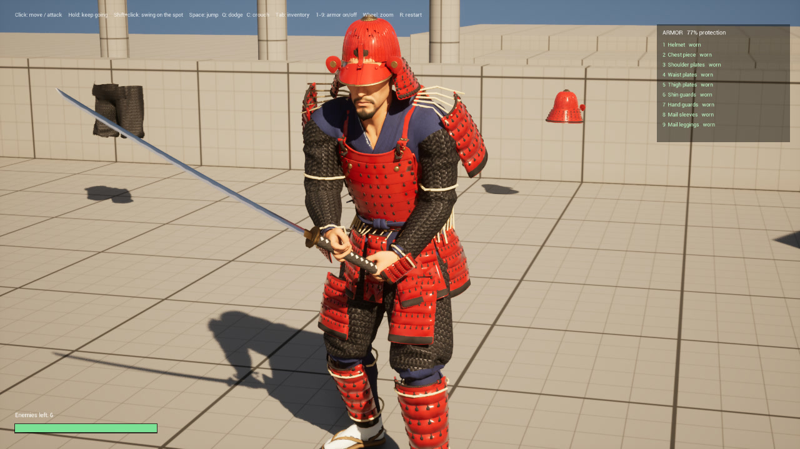
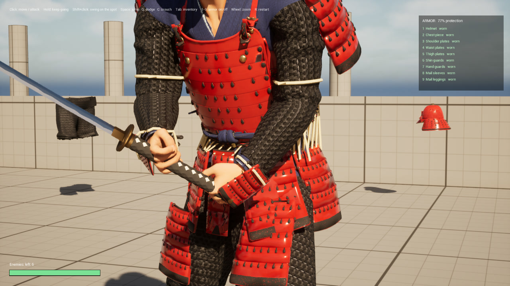
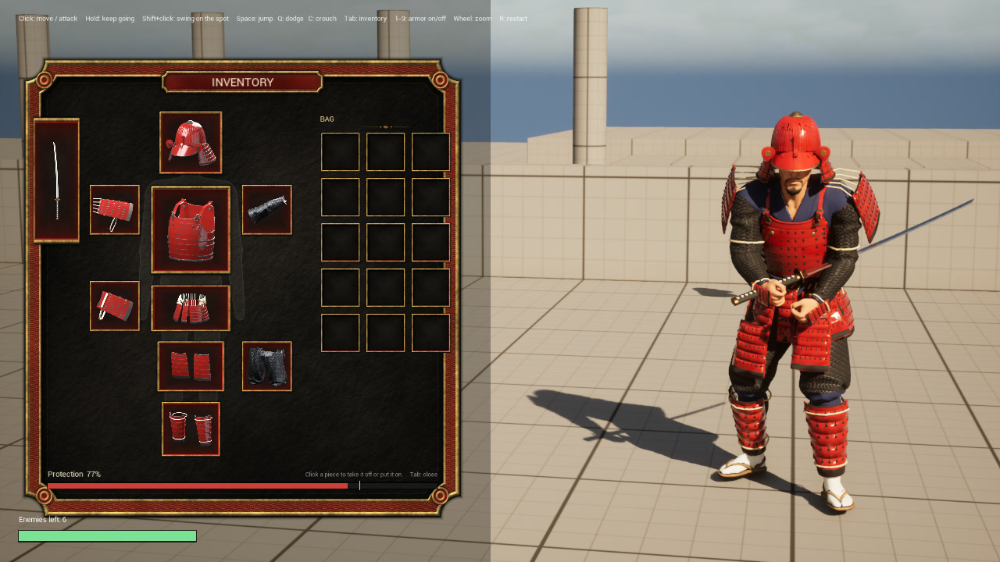
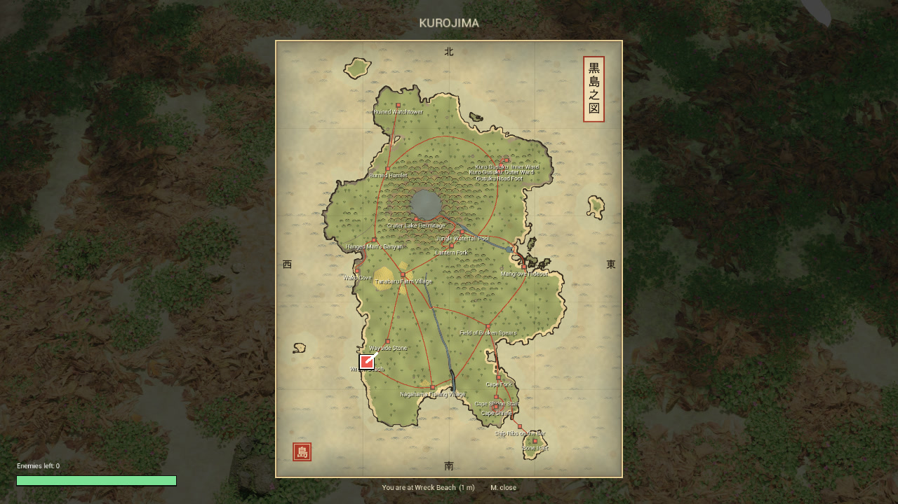
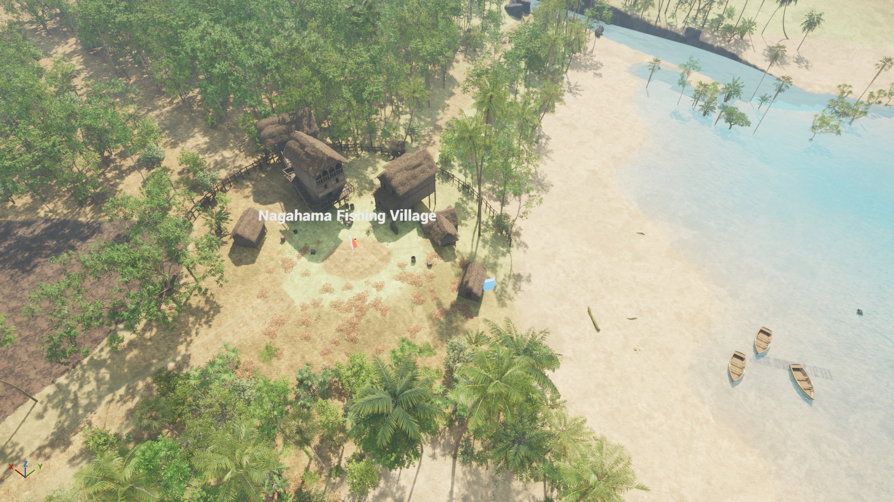
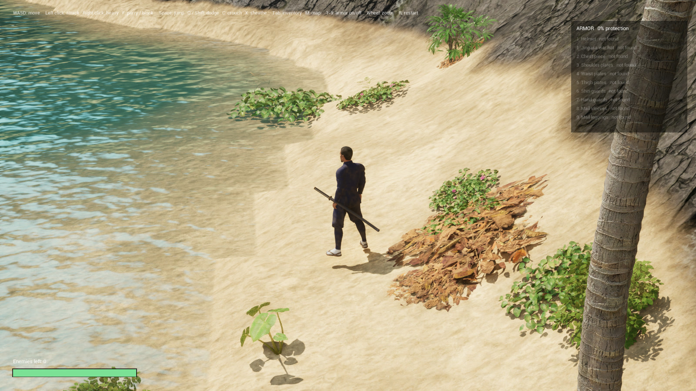
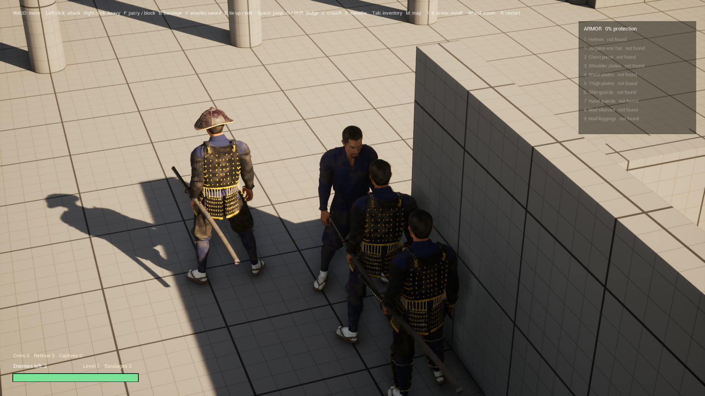

A sandbox game I am building in Unreal Engine 5.8: a shipwrecked samurai on a 2 km island, four factions to side with or fight, and a band of followers you recruit. In progress. Characters and armor are made with AI 3D tools, then cut, fitted and rigged by hand in Blender.

Nine separate pieces on one rigged body: helmet, chest, shoulder plates, skirt plates, thigh and shin guards, hand plates, mail sleeves and mail leggings. You start with none and find them on the island.

The skirt and shoulder plates swing as you move, driven by custom C++ code rather than a cloth simulation, so they never clip through the legs or fly out.

Every piece you wear adds protection. Click a piece to take it off or put it back on.

A map screen drawn in the style of an old Japanese map, generated from the real island terrain.

A 2.3 by 1.6 km island with fishing villages, forest, rivers and a volcano. Over 70,000 trees, still running at around 50 to 60 frames per second.

You start washed up on the beach.

Join a faction and you get a retinue that follows in formation and fights on your side.